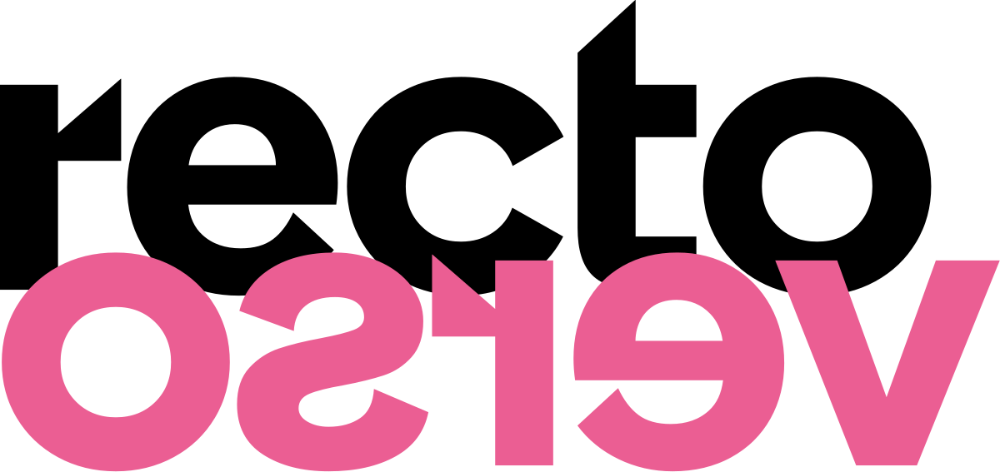

L’exposition des diplômé·e·s
2024 & 2025 de l’Ésad Saint-Étienne
Du 29 avril au 04 octobre 2026, la Cité du design réunit au sein d’une même exposition les travaux des diplômé·e·s 2024 et 2025 de l’Ésad Saint-Étienne. Conçue par le collectif ppdesigner, avec la participation curatoriale d’Éric Jourdan et le soutien des équipes pédagogiques, l’exposition recto verso interroge les préoccupations d’une génération en fin de formation. Elle propose une lecture collective des projets, elle révèle les récits ainsi que les prises de position de ces jeunes artistes et designers.
Le titre de cette exposition fait écho à un dispositif spatial qui crée des dialogues inattendus ; elle met en relation des pratiques individuelles, tout en laissant apparaître les choix formels, théoriques et éthiques propres à chacun et à chacune. De fait, la scénographie s’organise sur un principe de recto-verso qui oriente le regard du visiteur. Cette double lecture articule, d’une part, certaines pièces d’un projet finalisé tel qu’il se donne à voir à l’issue du diplôme, et d’autre part, les étapes qui le précèdent : recherches, essais, ratés. Ensemble, ces deux dimensions rendent compte de la construction progressive d’une pratique.
recto verso invite le public à une déambulation en deux temps. En donnant à voir à la fois les pièces misent en scène dans des dioramas et les processus qui les ont nourries, l’exposition souligne l’importance du dialogue, du collectif et de la transmission dans la formation des designers et des artistes. Elle offre ainsi une vision complète de ce que signifie étudier dans une école d’art et de design, entre réflexion et réalisation. Elle est aussi porteuse d’un message pour l’après-école, où il est plus que nécessaire de se réunir.